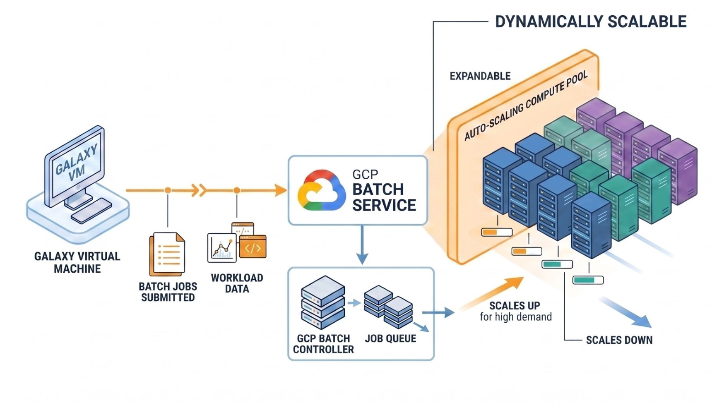
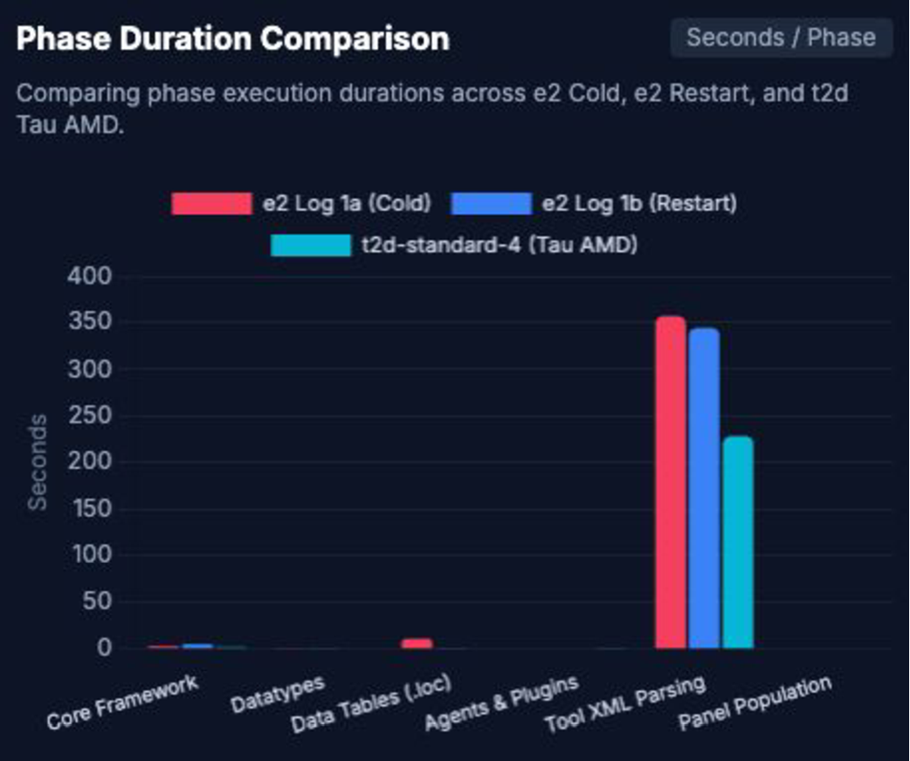
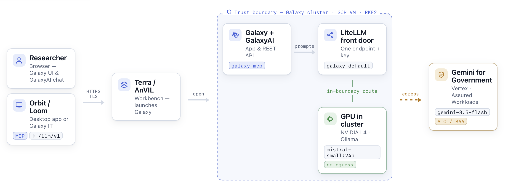

The Goal
Make the Galaxy service on AnVIL more usable, and therefore more used. Three levers, all of them properties of how the deployment is built:
- Quicker startup — time from launch to a Galaxy a researcher can work in
- Lower cost — both while idle and while analysing
- Easier updates and bug fixes — for the Terra and Galaxy teams alike
This poster reports measurements against each — including the one that has not moved yet.
A Lightweight VM, Offloading to Batch
Galaxy's core services run on one small, cost-conscious virtual machine. Anything computationally heavy is submitted to Google Cloud Batch, which provisions right-sized resources on demand and releases them when the work is done.

- An easy entry point for interactive analysis, without giving up elasticity for large workloads
- No idle cluster to pay for between analyses
- Batch workers see the same reference data and filesystem as the node
What Researchers Get
The architecture is a means to an end. Through a familiar web interface, and without managing command-line software or infrastructure:
- Broad tool availability — established bioinformatics tools, already installed
- Reusable workflows assembled from those tools
- Complete histories — transparent provenance for every result
- Reproducibility and collaboration — methods and results shared as first-class objects
- Approachable analysis for researchers across a wide range of computational experience
The result is a practical bridge between governed cloud data and the things Galaxy is good at.
Startup: Where the Time Goes
Startup is the lever that has not moved yet: before this work it was about 15 minutes, and today it is about the same. Rather than estimate, we instrumented the playbook.
Every task in galaxy_k8s_deployment, ranked by execution time. There is no long tail to optimise — only one dominant cost.
helm install galaxyThe Bottleneck, Isolated
Breaking that task into phases points at a single culprit: building Galaxy's tool panel by reading hundreds of files from CVMFS.

Cost: Proportional to the Workload

- Idle-time costs are substantially lower — and they compound over the life of an instance
- Workload costs stay proportional — typically less than a comparably sized cluster would spend processing the same work
Largely Independent Maintenance
- A month-plus upgrade
- Three groups coordinating
- Mostly independent
- Versioned, released separately
Each piece is versioned and released on its own cadence — Terra and Leonardo track a branch, and the Galaxy Helm chart moves independently.
Where It Stands
- Core tested features check out against the v2 deployment model
- Next: Terra Dev, to open it up for broader testing, then Prod
- Target release announcement by ACC
Try It
Open source, and launched on Google Cloud from a single command.
- galaxyproject/galaxy-k8s-boot — the Ansible playbook and launcher
- galaxyproject/galaxy-helm — the Galaxy Helm chart
- anvilproject.org — AnVIL documentation and access
Bringing AI to Galaxy on AnVIL: Two Complementary Approaches

Natural-language help to discover tools, design workflows, troubleshoot analyses and make sense of results — offered two ways, which share a model back end but are not the same thing.
- Built into Galaxy, rendered in the web UI
- Natively aware of your tools, workflows and histories
- A standalone agent client on the desktop, or an Interactive Tool
- Reaches Galaxy over the REST API, acting as you
| Dimension | GalaxyAI | Orbit / Loom |
|---|---|---|
| Where it runs | Server side, inside Galaxy | External client |
| How it reaches Galaxy | Internal API | REST API |
| Authentication | Instance wide | Per user |
| Scope | Galaxy only | General purpose agent |
| Model backend | One shared instance | Its own config |
How Orbit reaches Galaxy
galaxy-mcp translates that request into Galaxy REST API calls